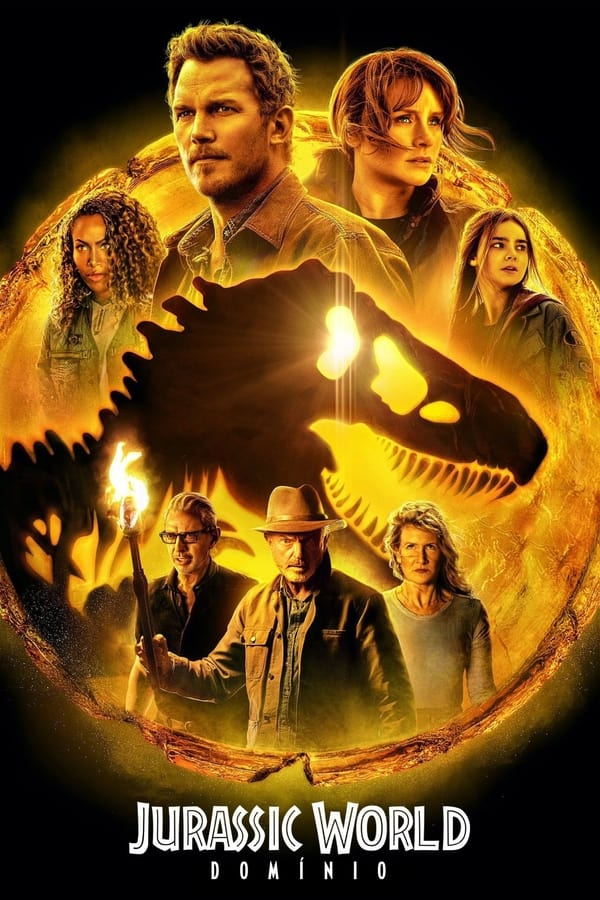

Jurassic World: Domínio

Sinopse:
Em Jurassic World Domínio, sequência direta do longa de 2018, - Jurassic World: Reino Ameaçado - quatro anos após a destruição da Ilha Nublar, os dinossauros agora vivem - e caçam - ao lado de humanos em todo o mundo. Contudo, nem todos répteis consegue viver em harmonia com a espécie humana, trazendo problemas graves. Esse frágil equilíbrio remodelará o futuro e determinará, de uma vez por todas, se os seres humanos continuarão sendo os principais predadores em um planeta que agora compartilham com as criaturas mais temíveis da história em uma nova era. Os ex-funcionários do parque dos dinossauros, Claire (Bryce Dallas Howard) e Owen (Chris Pratt) se envolvem nessa problemática e buscam uma solução, contando com a ajuda dos cientistas experientes em dinossauros, que retornam dos filmes antecessores. Capítulo final da trilogia iniciada por Jurassic World - O Mundo dos Dinossauros.
Trailer: